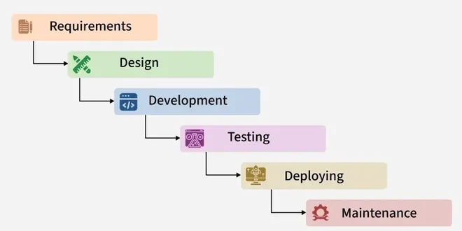

2.2 Classical Waterfall Model
The Classical Waterfall Model is the oldest and most widely taught SDLC model. It treats software development as a strictly sequential process: each phase must be fully completed, reviewed, and signed off before the next phase begins. There is no overlap between phases and no backward movement — if a mistake is found later, the model does not formally allow returning to fix it without breaking the prescribed flow.
The model is associated with Winston Royce, who published a paper in 1970 describing a large-system development approach. A common exam trap: students say Royce “invented” pure Waterfall as the ideal method. In reality, Royce illustrated the sequential diagram mainly to critique it — he argued that large projects need iteration, prototyping, and risk handling. The classical form (no feedback) became popular in industry and textbooks anyway because of its simplicity and ease of project planning.
Definition and core idea
In the Classical Waterfall Model, development flows in one direction like water falling over steps: from requirements down to maintenance. The underlying assumption is that every requirement can be captured completely at the start, that design can be frozen before coding, and that testing at the end will expose any remaining defects. This mirrors traditional engineering (e.g., bridge design → construction → inspection) and works only when the problem domain is stable and well understood.

How to read the Waterfall diagram
The diagram shows boxes or stages arranged vertically or horizontally. Arrows point downward only (or left-to-right). Each box represents a phase with defined inputs and outputs. In exams, you should be able to draw and label all phases and state that classical Waterfall has no curved return arrows — that absence is what distinguishes it from the Iterative Waterfall in §2.3.
Phases of the Classical Waterfall Model
Different textbooks list five, six, or seven phases. For exams, use the following six-phase breakdown (aligned with GFG and most university notes). Explain what happens and what is produced in each.
Phase 1 — Requirements gathering and analysis
The development team meets customers, users, and stakeholders to collect needs. Analysts study the existing system (if any), identify problems, and document functional and non-functional requirements. Ambiguities must be resolved here because classical Waterfall assumes requirements will not change later.
- Activities. The team conducts interviews and questionnaires, observes users in their environment, runs feasibility studies, and holds requirements workshops.
- Deliverable. The main output is the Software Requirements Specification (SRS), which acts as the contract for all later work.
- Entry criterion. The project must be approved and scope must be defined at a high level before this phase begins.
- Exit criterion. The SRS must be reviewed and signed off by the customer or management.
Phase 2 — System design
Architects and designers transform the SRS into a technical blueprint: module structure, databases, interfaces, algorithms, and hardware/software platform choices. Design is split into high-level design (architecture, major components) and low-level design (detailed module specs, data structures).
- Activities. Architects perform architectural design, database design, interface design, and security design based on the approved SRS.
- Deliverable. The team produces the Design Document Specification (DDS), also called the software design document.
- Exit criterion. A formal design review must pass, and no coding should start until the design is frozen.
Phase 3 — Implementation (coding)
Programmers write source code according to the DDS. Unit-level work happens here: choosing languages, following coding standards, version control, and code reviews. In classical Waterfall, integration across modules is minimal until the next phase.
- Deliverable. The phase produces source code, build scripts, and unit-test results for all planned modules.
- Exit criterion. All modules must be coded and compiled successfully so that the build is ready for formal testing.
Phase 4 — Testing
Testers verify and validate the product against the SRS. Testing progresses from small to large: unit testing → integration testing → system testing → acceptance testing (often with the customer). Defects are logged; in pure classical Waterfall, fixing a requirements-level fault discovered here is extremely costly because the model does not encourage reopening the SRS phase.
- Deliverable. The testing phase produces test plans, test cases, defect reports, and a test summary report.
- Exit criterion. Acceptance criteria must be met and all critical defects must be closed or formally waived.
Phase 5 — Deployment (installation / delivery)
The tested product is delivered to the customer environment: installation on servers or client machines, data migration, user training, and cutover from the old system. Release notes and operational manuals are handed over.
- Deliverable. The customer receives the deployed system, release documentation, and training materials.
- Exit criterion. The customer signs off on go-live and the warranty or support period begins.
Phase 6 — Maintenance
After delivery, the software enters the longest phase in terms of calendar time. Maintenance includes corrective (fix bugs), adaptive (adjust to new OS/hardware), and perfective (improve performance/features). In strict classical Waterfall, large new features may trigger a new project rather than informal iteration.
Assumptions behind the Classical Waterfall
- Requirements are complete and correct before design starts.
- Design is correct before coding starts. No prototyping of uncertain areas.
- Technology and environment will not change during the project.
- Each phase produces a baseline document that is not revised.
- Customer involvement is concentrated at the start (requirements) and end (acceptance), not throughout.
When any of these assumptions fail — as they do on most commercial software — the classical model becomes risky. That is why later models (Iterative Waterfall, Prototype, Spiral, Agile) were introduced.
Advantages of the Classical Waterfall Model
- Simple and disciplined — easy to teach, easy for managers to schedule. Each phase has a clear start and end; progress is measured by documents completed, not partial code.
- Strong documentation — SRS, DDS, test plans, and manuals are produced systematically. Useful for audits, government contracts, and long-term maintenance when staff turnover is high.
- Milestone-based management — budgets and timelines map to phases. Stakeholders know when reviews occur and when sign-off is required.
- Stable requirements — if requirements truly will not change (e.g., translating a fixed mathematical specification into code), sequential flow avoids rework and scope creep.
- Clear roles — analysts, designers, programmers, and testers work in separate phases; suitable for large teams with strict separation of duties.
Disadvantages and limitations
- Working software appears very late — customers may wait months or years before seeing anything runnable. Wrong assumptions in requirements are discovered only at acceptance testing.
- High cost of late change — an error in requirements propagates through design and code. Fixing it after testing can mean redoing entire phases; cost grows exponentially with phase distance (the “cost of change” curve is a standard exam point).
- No formal feedback — classical Waterfall does not allow going back; real projects often break the model informally, leading to undocumented rework.
- Poor fit for uncertain or evolving requirements — web apps, startups, and research projects rarely have frozen specs at day one.
- Testing is delayed — quality problems accumulate silently until the testing phase; test-driven or continuous testing is not part of the classical view.
- Risk is front-loaded invisibly — all major risks (wrong product, technology mismatch) materialise near the end, when options to recover are limited.
When to use the Classical Waterfall Model
- Requirements are fixed, complete, and legally binding (government, defence, banking regulations).
- The problem is well understood and similar systems have been built before (e.g., porting a known algorithm to a new platform).
- Project is small with few stakeholders and short duration.
- Technology, standards, and team skills are stable.
- Documentation and traceability matter more than speed (safety-critical or certified systems where process evidence is audited).
When NOT to use
- Requirements are unclear, changing, or discovered through use (most modern products).
- User interface or workflow must be validated early with real users.
- Project has high technical or business risk that needs early prototyping or spikes.
- Competitive pressure demands early partial releases (use Incremental, RAD, or Agile instead).
Real-world example
Example — Payroll system for a university with fixed government rules: Salary formulas, tax slabs, and reporting formats are defined by regulation and change only when law changes. The university commissions a vendor to replace an old system. Requirements are written in a tender document; design and testing must prove compliance. Classical Waterfall (or V-Model) fits because scope is stable and documentation for audit is mandatory. Contrast with a student startup building a social app — requirements evolve weekly; Waterfall would fail.
Relation to other models
Classical Waterfall is the baseline against which other models are compared. The Iterative Waterfall (§2.3) adds feedback loops. The V-Model (§2.13) keeps sequential ordering but pairs each development phase with a test phase. Incremental and Agile models deliberately deliver working software early. In exams, always state which variant of Waterfall you mean — classical (no feedback) vs iterative (with feedback).
Q: Explain the Classical Waterfall model of software development. Describe its phases with deliverables. Discuss the assumptions it makes, its advantages and disadvantages, and give examples of projects where it is appropriate or inappropriate.
Model answer outline:
- Define the Classical Waterfall as the oldest SDLC model with strictly sequential phases and no overlap or backward movement.
- Mention Royce (1970) and note that he warned against using pure sequential flow on large systems.
- Draw six phases from top to bottom with one-way arrows only.
- For each phase from requirements through maintenance, state its purpose, main deliverable, and exit criterion.
- List assumptions such as complete upfront requirements, frozen design, late testing, and limited mid-project customer involvement.
- Give advantages (simplicity, documentation, milestone control) and disadvantages (late software, costly changes, late risk discovery).
- Explain when to use the model (stable or regulated projects) and when not to use it (volatile or UI-heavy projects).
- Support the answer with examples such as a regulated payroll system versus a social-media startup.
- Contrast with Iterative Waterfall, which adds controlled feedback loops.